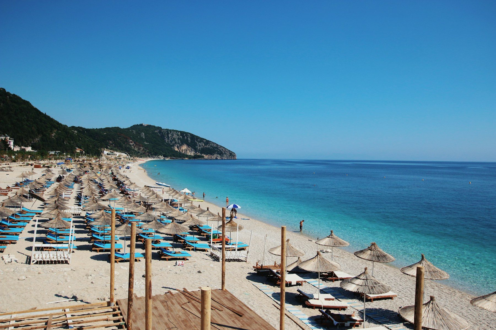
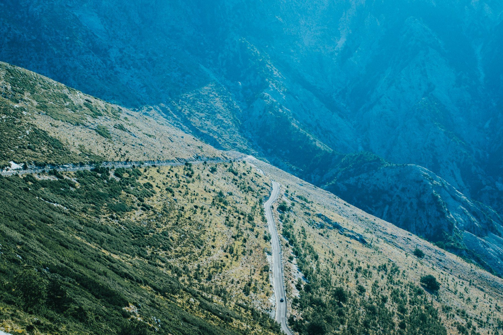
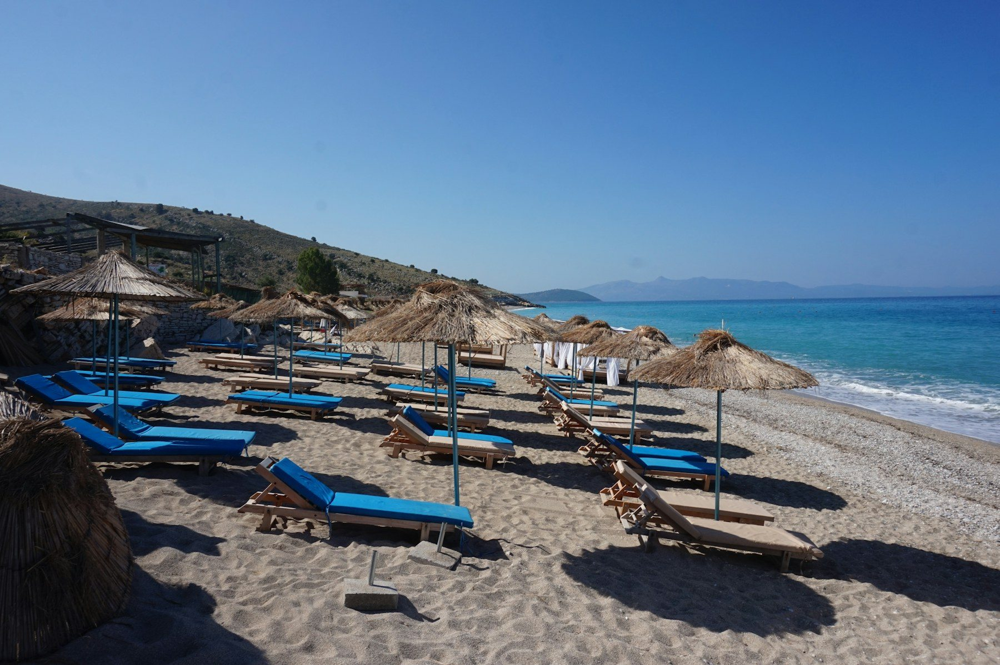

Dhërmi & Llogara
No. 22 · Albania · from the Albania deck · the mountain-to-beach day and the beach-club base
The deck's Day 2 and Day 3 in one stop: the Llogara viewpoint walk over the pass, then the long white-pebble beach at Dhërmi and its beach-club rows — mountains to sea in a single afternoon.
The list
| No. | Thing | Notes |
|---|---|---|
| 1 | Llogara viewpoint walk | A manageable coastal mountain walk at the pass on the way to Dhërmi — the deck's big scenery moment before the swim. |
| 2 | Dhërmi / Drymades beach | Beach-club energy: sunbeds, cocktails, music. The deck's Day 3, sundown to sunset dinner. |
| 3 | The swim after the walk | The deck's sequence — earn the afternoon swim. The water goes bright where the pebbles go white. |
| 4 | Sunset dinner on the sand | Beach bars run dinner tables at the waterline; book the front row in season. |


Eat & drink: byrek for breakfast, seafood lunches between swims, and trileçe to finish. The deck's Riviera base is Dhërmi / Drymades for four nights — accommodation around 3–4 bases, not a new hotel every night.Field note · Balkans 2027